对应的
对应的  时，谁知道你会得到如图 13-2 所示的优美的“&”形图呢？我
是知道的，年轻时的我在痴迷坎迪和罗莱特的《数学模型》的日子里，用铅笔、坐标纸和计算尺绘制过这条曲线，那本书给出了大量平面曲线和三维图形。
时，谁知道你会得到如图 13-2 所示的优美的“&”形图呢？我
是知道的，年轻时的我在痴迷坎迪和罗莱特的《数学模型》的日子里，用铅笔、坐标纸和计算尺绘制过这条曲线，那本书给出了大量平面曲线和三维图形。世界上任何一所大学的数学系的玻璃柜里的某个地方都会摆放着一些数学模型。这些模型通常包括一些多面体〔有凸多面体，也有星形多面体（图 13-1）〕、一些用线绳做的直纹曲面、用来演示不同球堆积方式的粘在一起的乒乓球、莫比乌斯带，可能还会有克莱因瓶等其他各种奇怪的玩意儿。
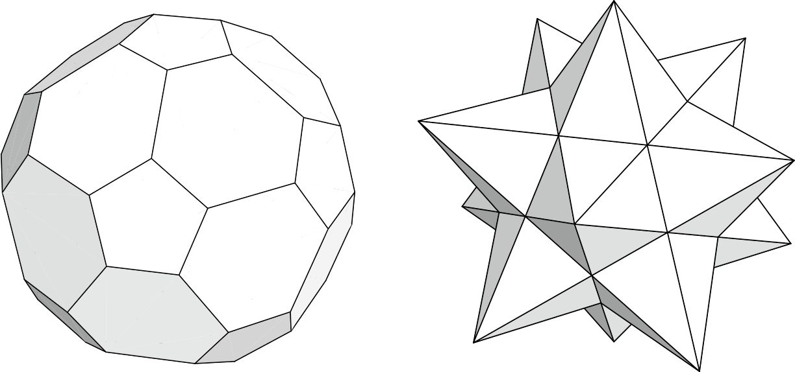
图 13-1 凸多面体（左）和星形多面体（右）
如今，这些模型逐渐褪色，落满了灰尘。在诸如 Maple 或 Mathematica 等数学绘图软件发明之后，人们可以用这些软件在电脑屏幕上瞬间生成这些模型的图像，还可以对它们旋转以便观察，还可以对它们随意变换、变形，让它们相交，因此利用木材、卡片、纸或线绳来制作这些模型就显得徒劳无功了。然而，在 19 世纪和 20 世纪的大部分时间里，对于数学家和学数学的学生来说，制作几何图形的实体模型是一种非常有趣的消遣形式，我很遗憾似乎不再有这种事了。在我的青少年时代，我几乎把马丁·坎迪和罗莱特 1951 年的经典著作《数学模型》（Mathematical Models ）中的所有模型都做出来了，那是一段快乐而有意义的时光。我的得意之作是把五个涂上不同颜色的立方体嵌入一个十二面体中的卡片模型中。
这种对直观教具和数学思想模型的兴趣是几何学在 19 世纪初重生的产物。正如我在第 10 章中提到的，尽管几何学领域在 17 世纪取得了一些有意思的进展，但是到了 17 世纪后期，微积分带来的激动人心的新思想让几何学变得暗淡无光。到 1800 年，几何学已不再是具有吸引力的数学领域，在那个时代，哪怕是除了在学校学过欧几里得几何之外没有研究过任何几何的人，也可能成为受人尊敬的职业数学家。但下一代人的情况完全改变了。
※※※
19 世纪几何学变革的第一次进展是由法国人让–维克托·庞斯列（1788—1867）在极其艰难的环境下取得的。庞斯列在 24 岁那年作为一名工程军官随同拿破仑的军队远征俄国，来到了莫斯科。随后，拿破仑的军队在严冬撤退，在克拉斯内之战（1812 年 11 月 16~17 日）之后，庞斯列被留下来等死。俄国搜索队发现他穿着法国军官制服，于是把他带离战场审讯。之后，庞斯列不得不开始长达五个月的跋涉，穿过冰冻的草原，前往伏尔加河畔的萨拉托夫战俘营。
为了让自己从牢狱之苦中解脱出来，庞斯列不断回想他在巴黎综合理工大学接受的良好的数学教育。在 1814 年 9 月，当他被允许回到法国时，他说他已经写满了整整七本数学笔记。这些笔记就是他的著作《论图形的射影性质》的初稿，这部著作是现代射影几何学的基础。[书ji分 享V 信jnztxy]
庞斯列的著作并不是很代数化。事实上，它代表 19 世纪前半叶的一场充满激情的争辩中的一方，这场争辩关于射影几何到底属于解析几何 领域还是综合几何 领域，尽管这在今天看起来很奇怪。笛卡儿建立的解析几何充分利用代数和微积分的威力来发现关于几何图形——直线、圆锥曲线以及更复杂的曲线和曲面——的结论。而起源于希腊并经由帕斯卡发展起来的综合几何更喜欢纯逻辑证明，尽可能少地使用数和代数。
因为射影几何中的定理不涉及距离和角度，所以起初看来，它似乎是经过两个世纪的无趣的笛卡儿数字运算之后对综合方法的复兴。然而，这被证实只是复兴的假象。19 世纪 20 年代后期，德国数学家奥古斯特·莫比乌斯、卡尔·费尔巴哈（1800—1834）以及尤利乌斯·普吕克各自独立地引进齐次坐标，正如前面的“数学基础知识：代数几何”中所描述的，他们使得射影几何彻底代数化。
除了庞斯列建立了现代射影几何学基础之外，19 世纪 20 年代还发生了另外一次几何学变革。1829 年，尼古拉·罗巴切夫斯基在一本俄国的地方杂志上发表了一篇关于非欧几里得几何的论文。随后他把这篇论文提交给圣彼得堡科学院，但是他们却因为它过于荒诞而拒绝接受。罗巴切夫斯基争辩说，经典几何中的常见假设，例如三角形的三个角之和等于 180°，也许不是放之四海而皆准的真理 ，而是可选的公理 。通过选择不同的公理，你可以得到不同的几何，这种几何看起来与欧几里得几何完全不同，它是一种非欧几里得几何。
年轻的匈牙利数学家亚诺什·鲍耶也按照相同的思路进行研究。高斯也是如此，1824 年，他在给朋友的一封信中提到：“三角形的内角和小于 180°的假设带来一个古怪的几何，它完全不同于我们的几何，但又与之完全相容……”事实上，高斯考虑这些想法已经好几年了。然而，他是一个珍惜平静生活、避免争议的人，因此从来没有发表过自己的想法。
正如罗巴切夫斯基的经历所表明的那样，这些想法是有争议的。在欧几里得几何的平坦平面（在三维版本中是“平坦”的空间）中，平行线和平行平面永远不相交，其中的三角形的三个内角之和总是等于两个直角之和，它有相似和全等的精妙论证，这些知识都牢牢地根植于欧洲人的意识之中。伊曼努尔·康德（1724—1804）的哲学进一步强化了这个观点，康德在当时的欧洲思想界占据主导地位。康德在 1781 年的著作《纯粹理性批判》中指出，欧几里得几何在人类的心智中是“与生俱来的”。康德认为，我们感知的宇宙是欧几里得式的，因为我们不能把它感知成其他的。按他的意思，宇宙是欧几里得式的，欧几里得真理超越了逻辑分析的范畴。1
1 康德的思想是几何中解析法与综合法分裂的根本源头。康德把解析事实和综合事实区别开来，解析事实的真理可以利用纯逻辑证明，无须借助外界的任何引用，而综合事实可以通过其他方法知道。在康德之前，哲学家假设“其他方法”的意思就是我们与这个世界互动的实际经验。然而，康德否认这个想法。在他的形而上学中，有一些事实不是解析的，也与经验无关。他认为欧几里得几何的事实就属于这种不来自经验的综合事实。这就是古希腊数学与 19 世纪初的“综合”几何之间的联系，不过我省略了这些联系的一些中间阶段。
在这种情况下，19 世纪二三十年代的数学家们不得不接受的奇怪的新几何是革命性的，被很多康德学派的人认为是颠覆性的。那时候，人们对法国大革命和战争的恐怖记忆犹新，所以他们非常重视自己信奉的哲学。他们认为形而上学的颠覆可能会带来社会的颠覆。如果庞斯列的射影几何是 19 世纪几何的第一次变革，那么罗巴切夫斯基和鲍耶的非欧几里得几何就是第二次变革。我们还将看到第三次、第四次、第五次变革随之而来。
※※※
在本章前的“数学基础知识：代数几何”中，我提到了普吕克和他的直线几何。普吕克出生于 1801 年，比阿贝尔大一岁。他的研究生涯很长，当过 43 年（1825~1868 年）的大学教师，大部分时间在德国波恩大学当教授。他的两卷《解析几何进展》（Analytic-Geometric Developments ，分别发表于 1828 年和 1831 年）是那个时代代数几何最前沿的著作，尽管其中大部分内容使用了经典的非齐次坐标。在 19 世纪 30 年代，他开始研究更高次的平面曲线，这里“更高次”的意思是“次数大于 2 的代数曲线”，换句话说，代数曲线比圆锥曲线更难处理。
对平面曲线的这些研究完全是从“解析”的角度进行的，即利用 19 世纪 30 年代已知的所有代数和微积分知识来推导这些曲线满足的定律和性质。普吕克 1839 年的著作《代数曲线理论》（Theory of Algebraic Curves ）明确讨论了这些曲线的渐近线，也就是这些曲线趋近于无穷时的表现。
普吕克的直线几何出现得更晚，过了 18 年（1847~1865 年）才出现，在此期间，他开始研究物理，并担任波恩大学物理系主任。事实上，对直线几何的研究直到他 1868 年去世也没有完成，这项研究留给了他的年轻助手菲利克斯·克莱因来完成。稍后我再详细介绍克莱因。
得益于代数学、微积分和几何学的滋养，对曲线的这种研究兴趣成为 19 世纪中期数学的一大增长点。这是一个容易获得的兴趣，或者说在数学软件出现之前的日子里是这样的，那时，人们需要付出艰苦努力，进行大量的计算和观察，才能在坐标纸上把代数方程转化成曲线。例如，下面的四次方程是一个普通的代数方程：
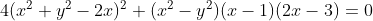
当你画出
对应的
时，谁知道你会得到如图 13-2 所示的优美的“&”形图呢？我
是知道的，年轻时的我在痴迷坎迪和罗莱特的《数学模型》的日子里，用铅笔、坐标纸和计算尺绘制过这条曲线，那本书给出了大量平面曲线和三维图形。
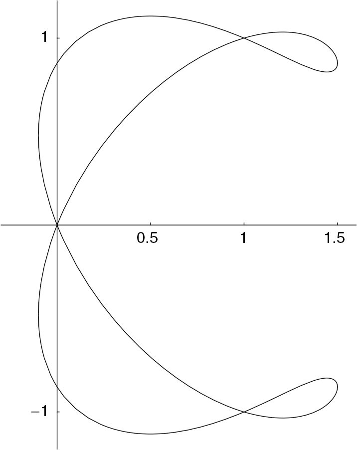
图 13-2 “&”形曲线
此刻，或许有读者怀疑青春期的我不善于社交，这应该不算错得离谱。不过，为了给年轻的自己辩护，我想说这些现在已经消失的仔细的数值计算和绘图经验给我提供了一种独特而强烈的满足感。这不只是我一个人的观点，像高斯这样的人物也有这样的感受。哈罗德·爱德华兹（1936— ）教授在他的著作《费马大定理》（Fermat's Last Theorem ）的 4.2 节中很好地阐述了这个观点，并引用了高斯的话。
如其他伟大的数学家一样，库默尔是“一个狂热的计算机器”，他的发现不依赖于抽象的思索，而是依赖于大量特殊的计算实例的不断积累。如今，人们对这些计算实践不以为然，也很少有人说计算可以是一种乐趣 。然而，高斯曾经说过，他认为发表二元二次型的完整分类表是一件多余的事：“因为，（1）如果碰巧需要，任何人经过一些实践后都无须花费太多时间就能很容易地计算出任意特定行列式的（二元二次型的）分类表来；（2）这样的工作本身就具有一定的魅力，所以花一点时间亲自计算是一件有趣的事；更重要的是，（3）人们很少有机会做这样的事。”你还可以举出牛顿和黎曼仅仅为了乐趣而进行长时间计算的例子……任何花时间进行（爱德华兹教授的书中的）计算的人都应该会发现，库默尔的计算以及他从这些计算中得到的定理完全在他的掌握之中，而且他很享受这个过程，只不过他没有承认罢了。
顺便提一句，根据《科学传记大辞典》的记载，普吕克是一位狂热的数学模型制作者。
坎迪和罗莱特不是凭空捏造出图 13-2 的。他们是从珀西瓦尔·弗罗斯特的一本优秀的小书《曲线轨迹》（Curve Tracing ）中找到它的。我只知道弗罗斯特出生于 1817 年，是英国剑桥大学国王学院的成员，也是英国皇家学会会员。他的书首次出版于 1872 年，向读者展示了由一个数学表达式（弗罗斯特并不局限于代数表达式）得到一个平面图形的各种可能的方法，以及一些巧妙的捷径。我拥有的一本《曲线轨迹》是 1960 年出版的第五版，它的封底内侧附有一本小册子，里面印有书中讲述的所有曲线的图片。图 13-2 的“&”形曲线是弗罗斯特的书中的图页Ⅶ中的图 27。
弗罗斯特在书中还回顾了中世纪的代数几何学家，普吕克属于其中最早的一批伟人。与弗罗斯特的《曲线轨迹》的主线相同（可以这么说），但数学意义更深的是爱尔兰数学家乔治·萨蒙（1819—1904）的四本教材：《论圆锥截线》（A Treatise on Conic Sections ，1848 年出版）、《论高次平面曲线》（A Treatise on Higher Plane Curves ，1852 年出版）、《现代高等代数简介》（Lessons Introductory to the Modern Higher Algebra ，1859 年出版）和《论三维解析几何》（A Treatise on the Analytic Geometry of Three Dimensions ，1862 年出版）。我桌上有一本《论高次平面曲线》，那本书中满篇都是美妙的术语，但很遗憾的是，大部分术语今天已经不再使用：蔓叶线（cissoids）、螺旋线（conchoids）和外旋轮线（epitrochoids），蜗线（limaçons）和双纽线（lemniscates），角状尖点（keratoid cusps）和坡状尖点（ramphoid cusps），孤点（acnodes）、歧点（spinodes）和结点（crunodes），凯莱曲线（Cayleyans）、黑塞曲线（Hessians）和斯坦纳曲线（Steinerians）2 。在萨蒙的时代，齐次坐标已经“安居”下来，但他还是称之为“三线”坐标 3 。
2 蔓叶线、螺旋线、外旋轮线、蜗线和双纽线全都是特殊的曲线。例如，双纽线呈 8 字形。尖点是曲线中的尖突，例如数字 3 在其中间有一个尖点。结点是曲线与自己相交的地方，双纽线中间就有一个结点。凯莱曲线、黑塞曲线和斯坦纳曲线都可以从给定的曲线通过各种操作得到。
3 实际上有很多“实现”二维几何齐次坐标的方法。一种方法就是使用面积 坐标。在这个平面内挑出 3 条直线组成一个三角形。从任何一个点出发，画出到这个三角形 3 个顶点的直线。于是形成 3 个新三角形，每一个三角形都以你所选择的点为一个顶点，其对边是原来的三角形的一条边。这 3 个三角形的面积（加上适当的符号）就起到了齐次坐标系的作用。面积坐标是莫比乌斯的重心坐标整理后的形式。在莫比乌斯重心坐标中，一个点是由 3 个重心定义的，这 3 个重心必须在这个基础三角形的 3 个顶点上，目的是使选定的点是它们的质心。我们也可以在高于二维的空间中进行类似的处理，当然出现的代数很快 就会变得更加复杂。
※※※
萨蒙也是一个“狂热的计算机器”。在他的《高等代数》第二版中，他加入了求解一般六次曲线时得出的一个不变量。如果看看“数学基础知识”中给出的一般的圆锥曲线的不变量，你就会相信这是了不起的壮举，它在萨蒙的书中占据了 13 页篇幅。
我说这些就是为了提醒人们，中世纪对曲线和曲面的这种痴迷部分得益于纯代数的滋养，反过来它又孕育出了其他结果。我在“数学基础知识”中所描述的不变量最初完全是用代数语言构建的，后来才使用了几何解释。
自 1840 年起，阿瑟·凯莱（顺便说一下，他是萨蒙的挚友）和西尔维斯特成为这个领域的关键人物。他们的大部分工作涉及多项式的不变量，而不是我在“数学基础知识：代数几何”中提到的表示圆锥曲线的二元二次多项式的不变量（如果用齐次坐标，就是关于
、
、 的二次多项式）。所有多项式的集合，比方说未知量
、
、
的系数取自某个域（如复数域
的二次多项式）。所有多项式的集合，比方说未知量
、
、
的系数取自某个域（如复数域  ）的所有多项式组成的集合，在通常的加法和乘法下形成一个环。两个多项式可以相加、相减或相乘：
）的所有多项式组成的集合，在通常的加法和乘法下形成一个环。两个多项式可以相加、相减或相乘：
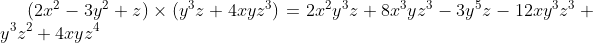
但除法不总是可行的。它是一个环，因此对多项式的不变量的研究实际上就是对环结构 的研究。
在 19 世纪，没有人这样想过。不变量理论这条小河开始汇入环论这条大河的最初一幕发生在 19 世纪 80 年代末，这要归功于保罗·戈尔丹（1837—1912）和戴维·希尔伯特（1862—1943）的工作。
他们俩都是德国人，但戈尔丹比希尔伯特大一辈。戈尔丹出生于 1837 年，在 1874 年被聘为德国埃尔朗根大学的教授，是埃米·诺特的父亲的同事。事实上，埃米是戈尔丹指导的博士研究生。据说她是戈尔丹唯一的博士生，这是因为曾于柏林求学的戈尔丹的数学研究风格高度形式化与逻辑化，其数学计算非常冗长，是罗马风格而不是希腊风格。到了 19 世纪 80 年代，戈尔丹成为不变量理论的世界顶尖专家。然而，他无法证明一个关键定理，这是一个能使该理论成为完整体系的定理。他只能在特殊的情况下证明这个定理成立，但不能证明其一般性。
接着希尔伯特登场了。他于 1862 年出生在普鲁士的哥尼斯堡（即今天俄罗斯的加里宁格勒），1886 年成为哥尼斯堡大学的无薪讲师 。他在 1888 年访问埃尔朗根大学，见到了戈尔丹，希尔伯特被不变量理论中的那个著名问题深深吸引了，该问题在当时被称为戈尔丹问题，因为这个理论基本上都属于戈尔丹。希尔伯特认真思索了几个月，然后把这个问题解决了。
希尔伯特在 1888 年 12 月发表了证明，并立即把一份证明寄给了剑桥的凯莱。已经 68 岁的凯莱马上回复他：“我认为你已经找到了这个重要问题的解答。”戈尔丹却没有那么热情。尽管当时希尔伯特在哥廷根大学还没有职位，但他的证明却具有“地道的哥廷根”风格：简洁、优雅、抽象、直观，是希腊风格而不是罗马风格。这不符合戈尔丹的柏林情结。他轻蔑地说：“这不是数学，而是神学 。”1886 年在哥廷根大学获得教授职位的克莱因对这个证明印象深刻，因此当下就决定要尽快把希尔伯特聘为他的助手。
※※※
我不打算陈述该定理的证明 4 ，而是准备花点时间讲一下希尔伯特不久之后给出的争议更少且更易于理解的结果：零点定理（人们通常使用其德语名称“Nullstellensatz”）。零点定理引入了簇 的概念，而且给出了它与几何的一种简单联系。
4 1888 年的这个结果被称为希尔伯特基定理，在任何一本好的高等代数或现代代数几何教材中，它都是这么被命名的。
从历史上看，这种联系有点儿奇怪，因为希尔伯特不是在代数几何中，而是在代数数论中发现这个定理的。这是一个关于交换环的结构的定理，完全属于环论。不过现在代数几何学家已经牢牢掌握了它。翻开任何一本代数几何教材 5 ，你都会在它的前两三章中找到零点定理。因此，我不会因在这里给出几何解释感到太内疚，但是我希望读者记住，零点定理的确是纯代数定理，是环论中的定理。
5 对数学知识储备足够的学生，我推荐史密斯等著的《代数几何入门》（An Invitation to Algebraic Geometry ，斯普林格出版社，2000 年出版）。该书用现代风格写成，涵盖了所有基础知识，包括大量的练习。零点定理在此书中的第 21 页。
零点定理说的是什么呢？考虑由三个未知量
、
、
构成的所有多项式组成的环。首先，你要注意这的确是一个环：加法、减法、乘法总是可行的，除法偶尔可行。你还要记住，令其中的一个多项式等于零定义了三维空间中的某个区域，通常是一个曲面。（我在这里使用的是通常的笛卡儿坐标，而不是齐次坐标。）例如，当  是以原点为圆心、半径为
是以原点为圆心、半径为
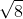
的球面上的点时，多项式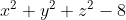
等于 0。你可以通过想象把这个多项式与那个球面联系起来。现在，考虑这个多项式环中的一个理想。理想就是一个子环，是这个多项式环中的一个环，满足一个额外的条件：如果这个子环中的任意一个元素与原环中的任意一个元素相乘，其结果仍在这个子环中。
例如，考虑所有具有这种形式的多项式：
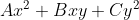
。其中 、
、 、
、 是
、
、
的任意多项式（包括零多项式）。它是所有关于
、
、
的三元多项式组成的大环中的一个理想。多项式
是
、
、
的任意多项式（包括零多项式）。它是所有关于
、
、
的三元多项式组成的大环中的一个理想。多项式 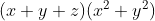
属于这个理想，而多项式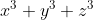
则不属于这个理想。现在，我要介绍簇 这个关键概念，更确切地说是代数簇 。从几何意义上说，它就是二维空间中曲线概念的推广，或者三维空间中曲面或“空间曲线”概念的推广。事实上，一个簇是某个多项式或一族多项式的零点的集合 6 。
6 迈克尔·阿廷在他编写的教材中说：“我不知道这个毫无吸引力的术语的出处。”我也不知道它的出处，然而我不觉得它毫无吸引力，当然不要与零点定理比较。杰弗·米勒在介绍最早使用的数学术语时指出，这是意大利几何学家欧金尼奥·贝尔特拉米在 1869 年提出的术语。我浏览了贝尔特拉米那个时期的著作，没有找到这个术语。由于我不懂意大利文，因此我没找到这个术语不代表我否定这种说法。
所以，我在上面提到的球面是空间中使多项式 等于 0 的点，它是一个簇。同样地，方程为
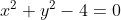
的圆柱与这个球面的交集也是一个簇（图 13-3）。这个交集由三维空间中两个半径为 2 的水平圆周组成，其中一个圆周在 平面上方高度为 2 的地方，另一个圆周在
平面下方距离为 2 的地方。这两个圆组成一个簇，是多项式组
和
的零点集合。
平面上方高度为 2 的地方，另一个圆周在
平面下方距离为 2 的地方。这两个圆组成一个簇，是多项式组
和
的零点集合。
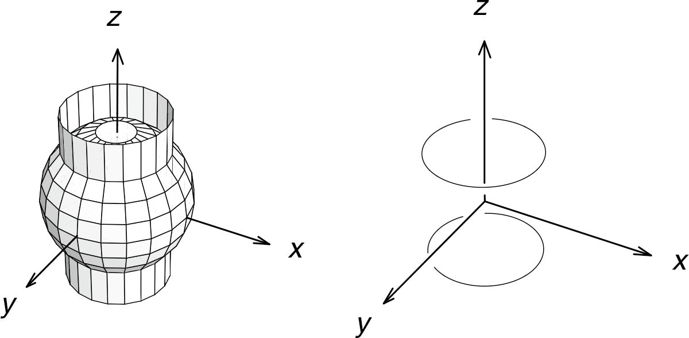
图 13-3 两个多项式相交（左）形成一个簇（右）
我刚才提到的那个理想是形如
的所有多项式组成的集合。它可以定义一个簇：所有使该理想中每一个多项式都等于 0 的点
。那个簇、零点集合到底是什么呢？哪个点集可以使该理想中的所有多项式都等于 0 呢？答案是
轴。由该理想定义的簇就是当  、
、
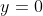
且
为任意值时得到的一条直线。
希尔伯特零点定理是这样陈述的：如果一个多项式在该簇上的每一点都等于 0（在上面的情况中，就是在
轴上的每一个点处都等于 0），那么该多项式的某个幂在该理想中。例如，多项式
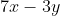
轴上的每一个点处都等于 0，它不在该理想中，但它的平方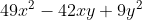
在该理想中。当然，我进行了过度的简化。这里未必一定是三个未知量
、
、
，可以是任意个未知量。例子中的簇也特别简单。如此过度简化的最大过失可能是使用了这样的假设（我当时没指明，而是把它当成默认的）：构成环的
、
、
多项式的系数是实数。事实上，它们必须是复数，零点定理对实系数多项式不总成立。7
7 我隐瞒了一件事，自 19 世纪中期以来，几何已经接纳了复数坐标。最初，人们很难在概念上适应这个事实，这就是我隐瞒它的原因。例如，如果允许复数作为坐标或系数，那么直线就可能与其自身垂直。（在通常的笛卡儿坐标系下，对于斜率分别是
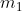
和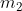
的两条直线，当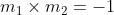
时，它们是互相垂直的。因此斜率是 i 的直线与自身垂直。）同样地，教高等代数几何的老师会向刚刚结束了在分析课上与复平面挣扎的学生们介绍复直线 。（复直线指坐标是复数的一维空间。你一定会被这种说法弄糊涂的。）在这方面，零点定理与代数基本定理类似。事实上，这两个定理有深层次的联系，零点定理有时被称为代数几何基本定理。这种联系可以用所谓的零点定理的弱形式很好地表示：多项式环中的理想对应的簇是非空的（除非这个理想是整个环） 。由于那些构成一个理想的多项式一定有某些公共零点，因此这个定理被称为零点定理。而代数基本定理称一个一元多项式的零点集合是非空的。
※※※
1893 年，希尔伯特给出了零点定理。从 19 世纪中期开始，几何学又发生了三次变革。只有最近一次（即第五次）变革是由代数引发的，而第三次变革和第四次变革则在 20 世纪对代数学产生了深远的影响。
第三次变革和第四次变革都是由伯恩哈德·黎曼引发的，他也许是有史以来最富有想象力的数学家。
1851 年，黎曼在哥廷根大学的博士毕业论文中提出了黎曼曲面，这是自相交曲面，在研究某些类型的函数时，它可以代替复平面。
当我们认为函数作用在 复平面上时，黎曼曲面就出现了。例如，复数 -2i 位于原点下方的负虚轴上。如果把它平方，我们就得到 -4，这个数位于原点左侧的负实轴上。我们可以这样想象：平方函数把 -2i 沿逆时针方向旋转 270°，使其到达它的平方 -4 处。
黎曼就是这样想象平方函数的。取整个复平面，从原点出发向无穷沿一条直线割开，抓住开口的上半部分，把它以原点为中心沿逆时针方向旋转，把它拉伸整整一圈。此时，你抓住的一端在拉伸面的上方，而开口的另一端在拉伸面的下方。让开口一端穿过
这个面（你得想象复平面不仅是可以无限拉伸的，而且要想象它可以像雾一样穿过自身）与原来的开口重新连接。此时，你脑海中的图像有点儿像图 13-4。这就是作用在
上的平方函数的图像。
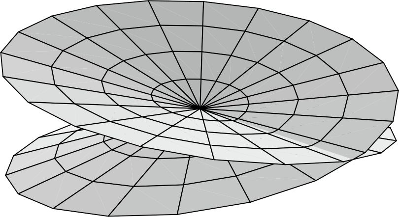
图 13-4 对应平方函数的黎曼曲面
当我们从反函数 的角度看黎曼曲面的时候，黎曼曲面的威力就显示出来了。在数学上，处理反函数有点儿麻烦。取平方函数的反函数，即平方根函数。其中的问题是任意非零数都有两 个平方根。4 的平方根是多少？答案是 2 或者 -2。2 和 -2 的平方都是 4。我们没有办法回避这个问题，但是，黎曼曲面提供了一个更精巧的方法来解决这个问题。
例如，-1 的平方根是 i 或 -i。黎曼之前的数学家可能会用类似图 13-5 的图像来描绘这种陈述。
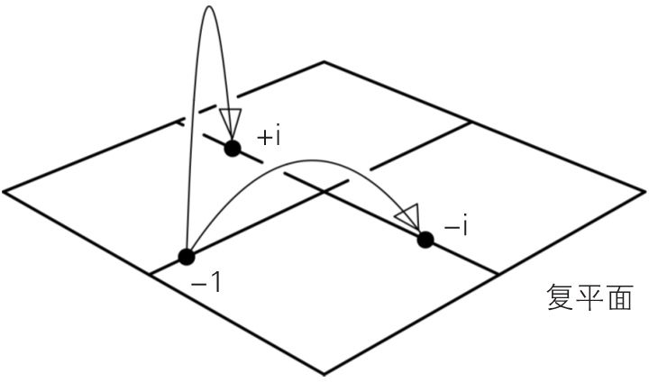
图 13-5 -1 有两个平方根（黎曼之前的观点）
然而，如图 13-4 所示的黎曼曲面，把所有复数都成对地堆放，一个在上，一个在下。（沿着“折痕”的复数除外，然而，折痕的位置是任意的，而且如果允许使用确实需要的四维空间来画这幅图，我就可以让折痕消失。）
这表明图 13-6 是另一种思考平方根函数的方式。我们通过考虑平方函数给出的黎曼曲面实际上是解释平方函数的反函数 （即平方根函数）的完美方法。-1 有两个平方根，它们是一条直线穿过黎曼曲面得到的两个点。
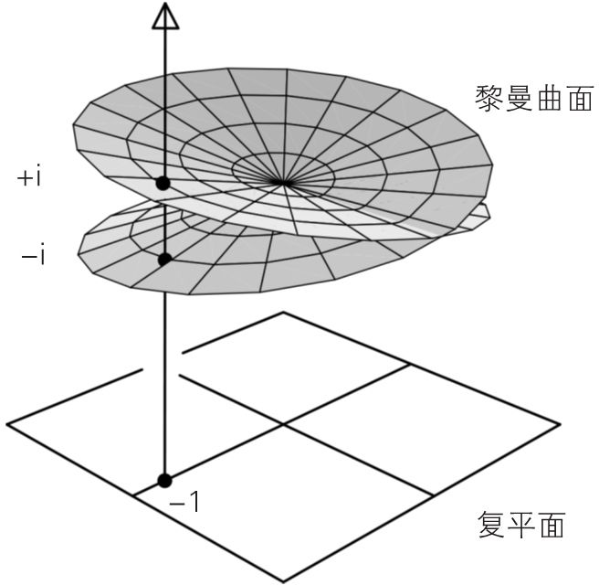
图 13-6 -1 有两个平方根（黎曼之后的观点）
黎曼引发的这次变革的重要性在于它为函数论（属于分析学）与拓扑学（这是几何的一个分支，当黎曼提出这一切的时候，它刚刚开始出现）之间搭建了一座桥梁。
第 14 章将更详细地讨论拓扑学。我在这里只想说，黎曼创造的分析–拓扑桥梁开创了使用 20 世纪发展起来的代数几何和代数拓扑的精巧工具研究函数论的局面。其中一个核心定理是黎曼–罗赫定理 8 ，这个定理把一个函数的解析性质与对应的黎曼曲面的拓扑性质联系起来。理查德·戴德金和海因里希·韦伯于 1882 年合作发表了一篇论文，在这篇论文中，他们把理想理论应用到黎曼曲面，发现了黎曼–罗赫定理的一个纯代数证明。这就是第 12 章提到的那个结果。（事实上，在此前的 140 年里，黎曼–罗赫定理很有可能以其更一般的形式为数学家带来了比其他任何定理都多的研究。）
8 1861 年，古斯塔夫·罗赫（1839—1866）来到德国哥廷根大学，在黎曼的指导下学习。他在黎曼去世四个月后也离开了人世，非常年轻，只有 27 岁。
黎曼并没有满足于一次几何学变革，1854 年，他宣读的令人震惊的特许任教资格论文《关于几何基础的假设》引发了第四次几何学变革。黎曼在其中构建了整个现代微分几何，提出了 60 年后被阿尔伯特·爱因斯坦用作广义相对论框架的数学。
在研究黎曼曲面时，代数结果是间接的。黎曼的论文给出了 20 世纪的关键概念流形 的原型。流形是一个“局部平坦”的任意维空间，也就是说，它在小范围内可以被近似看成普通的欧几里得空间，这就像在日常生活中，我们可以把地球的弯曲表面看成平面一样（图 13-7）。流形成为 20 世纪代数几何中的关键概念。（流形的德文是“mannigfaltigkeit”，事实上这个词是由黎曼创造的，但不是在这篇论文中提出的。）
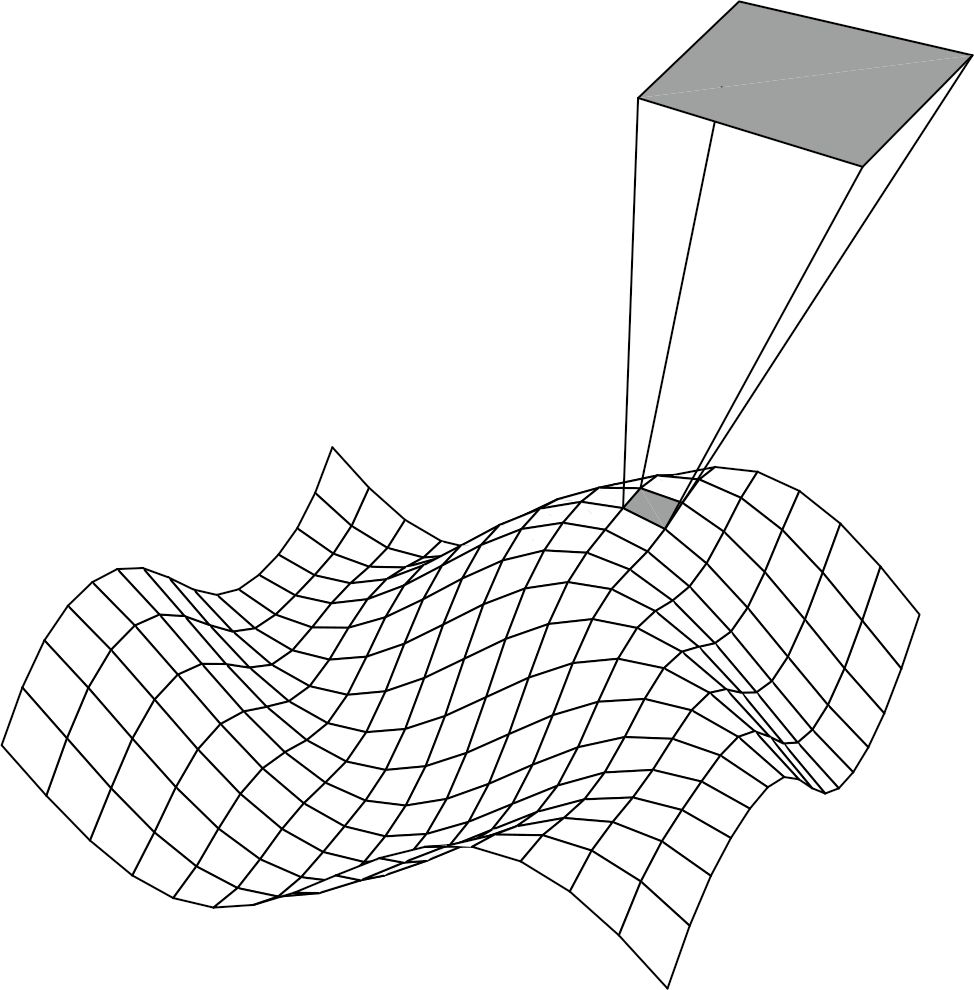
图 13-7 一个流形可以有很多曲折的地方，但是它在每一点处都是“局部平坦的”
虽然 19 世纪第五次几何变革的影响还延伸到了拓扑学、分析学和物理学领域，但它是最纯粹的代数变革。为了了解这场变革，我们不得不重谈一个话题、重访一个地方。这个话题就是群论，而这个地方就是岩石兀立、海风呼啸的挪威峡湾。
※※※
第 11 章提到了挪威数学家西罗和 1862 年他在奥斯陆大学开设的关于群论的课程。参加该课程的人中有一位年轻的挪威人，他名叫索菲斯·李（1842—1899），当时只有 19 岁。他那时像一个海盗：高高的个子，满头金发，身材强壮，英俊而勇敢。李热衷于徒步旅行，据说他一天能走 50 英里（约 80 千米）。无论是在什么地形上跋涉，这样的水平都是非常厉害的，更何况是在挪威这种山地、冰川地形上呢？数学界有一个传说：如果李在徒步时赶上下雨，那么他会脱下衣服，把它们塞到包里。但阿里尔·斯图海于格（1948— ）为李所写的那本详尽并且充满敬佩之情的传记 9 中却没有提到这个说法。
9 斯图海于格（至少在这本传记的理查德·戴利的英文译本中）偶尔表现出来的灵巧的文学手法引起了我的幻想。关于李在学生时代的一次徒步旅行，斯图海于格写道：“他们在长途跋涉中遇到了三个美丽、机智的阿尔卑斯山挤奶女工，用李的话来说，她们‘没有任何多余的沉默’。然而，他们在那个夏天深入尤通黑门山脉的距离似乎是不确定的。”
尽管今天李被看作一名代数学家，事实上他总是认为自己是几何学家。他的所有工作都充满了几何的奇思妙想。1869 年，他自费发表了一篇射影几何论文，凭借这篇论文，李向大学申请了访问欧洲各数学中心的资助（易卜生就是在 5 年前依靠这样的资助离开挪威的）。1869 年，李离开挪威，在国外待了 15 个月。他去了德国柏林，他在那里与当时也在柏林访问的菲利克斯·克莱因建立了深厚的友谊。克莱因在普吕克去世后帮助出版了普吕克关于直线几何的著作。李在挪威看过这本著作，并深受普吕克思想的影响。李又去了哥廷根，然后去了法国巴黎。他在巴黎再次遇到了克莱因，当时李 27 岁，克莱因刚满 21 岁，这两个年轻人都参加了卡米尔·若尔当开设的课程。
若尔当稍微年长一点，他当时 32 岁，但是他与李和克莱因是同一代学者。若尔当接受的是工程师的训练，最后却成为出色的数学全才。在 1870 年的春天，他刚刚出版了群论的第一本著作《论置换》。若尔当的著作没有达到凯莱 1854 年的论文的那种一般性。他把群写成置换群和变换群。然而，这本著作涵盖的范围很广，被认为是现代群论的奠基性著作。至于李对西罗 1862 年的讲座记住多少，我们不得而知，但是似乎可以肯定的是，正是有了与若尔当在巴黎相处的这几周，群的概念才深深地印入了他和克莱因的脑中。
这份幸福且格外多产的数学友谊到 1870 年 7 月 19 日被迫中止，当时法兰西帝国宣布同普鲁士王国开战。普鲁士人克莱因不得不匆匆离开巴黎。8 月中旬，李也离开了巴黎，往南徒步到瑞士，只带了一个背包。在距离巴黎 30 英里的地方，他被当作德国间谍抓了起来，似乎是因为有人听到他用听起来像德语的语言自言自语。
宪兵检查李的背包，发现了印有德国邮戳的几封信和笔记本，写满了神秘的符号。李抗议说他是一名数学家。宪兵命令他解释笔记中的内容来证明自己的清白。斯图海于格写的李的传记中是这样记载的：
李应该是怒吼着说：“你们永远也不可能理解这些！”（学习李理论的我们经常发出这样的声音……——原注）但是当他意识到他的处境是多么危险时，据说他还是做了些努力，他的开场白是这样的：“先生们，请考虑三个轴，
在被允许继续前往日内瓦之前，李还是不得不在监狱里待了一个月，这段时间他读了瓦尔特·司各特爵士的小说的法译本。当他于 12 月回到奥斯陆的时候，发现自己已成为引起 19 世纪挪威媒体轰动的人物——一位曾被当作间谍抓起来的学者。1863 年 1 月，他得到了奥斯陆大学的讲师职位，成为一名研究人员。不久之后，克莱因也得到了哥廷根大学的讲师职位。克莱因在普法战争中短暂地做过医务员工作，后来因病而离开。各地的数学家都在阅读若尔当的著作。19 世纪 70 年代是群论的第一个伟大的十年。几何学的第五次变革也在这个令人惊异的世纪开始了：几何的“群化”。
※※※
第 11 章介绍了几种不同类型的群。但它们都是有限
群。每一个群都只有有限多个元素。群可以是有限的，也可以是无限的。整数集  以普通加法作为合成法则形成一个无限群。
以普通加法作为合成法则形成一个无限群。
几何学中包含丰富的无限群的例子。第 11 章中展示了二面体群
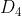
，这是一个包含八个元素的群，我们可以通过保持一个正方形所占据的二维空间不变的旋转和翻转该正方形的变换来描述这个群。这是一个有限群，但是，如果去掉上面的限制会发生什么呢？如果允许这个正方形以任意方式 移动到平面上的某个新位置：可以以任意角度旋转，可以任意翻转，将会发生什么呢（图 13-8）？这些 移动可以得到什么呢？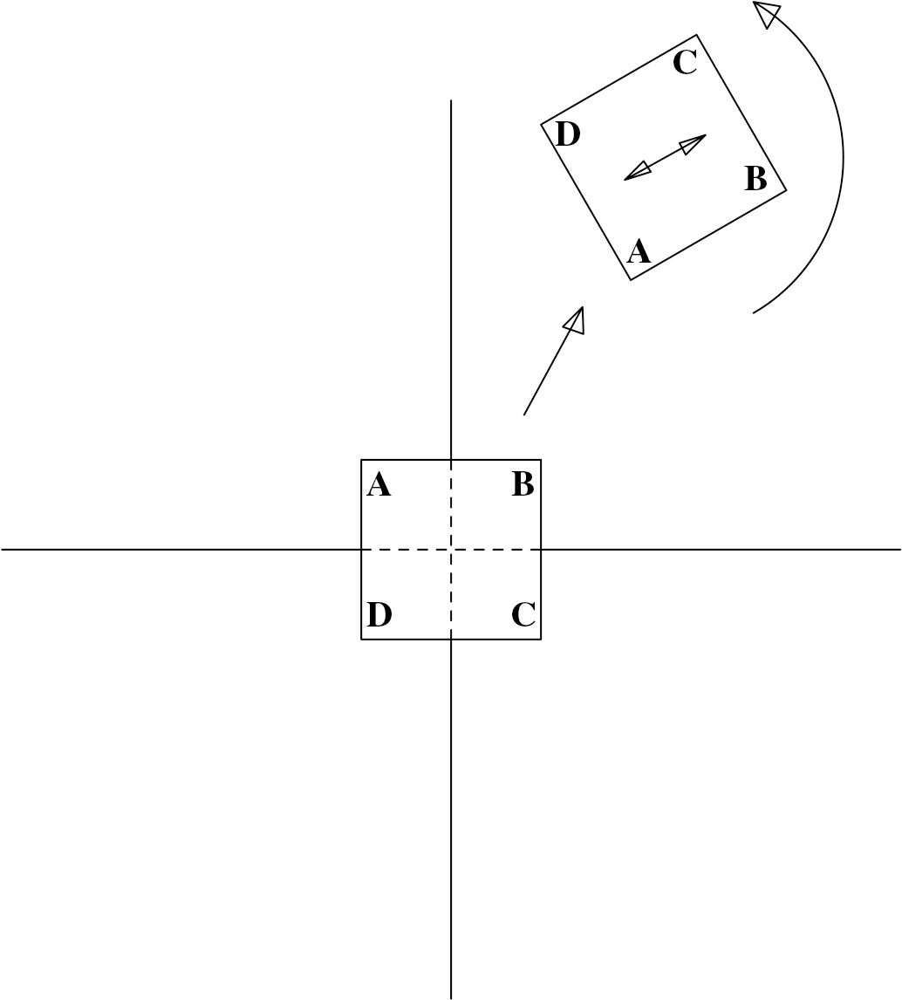
图 13-8 一个等距变换
结论是这些移动构成群！“把这个正方形移动到一个新位置和新定向”的操作满足群运算的所有要求。如果你用一种方式移动它，再用另一种方式移动它，其合成结果就如同你用第三种方式移动它一样：
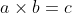
。结合律 显然成立（“进行这个移动，然后再进行两个移动的合成移动……”）；不动的“移动”将作为单位元，每一个移动都可以倒过来进行（“有逆元”），所以它是一个群。（问题：它是交换群吗？）
显然成立（“进行这个移动，然后再进行两个移动的合成移动……”）；不动的“移动”将作为单位元，每一个移动都可以倒过来进行（“有逆元”），所以它是一个群。（问题：它是交换群吗？）
显然，这是一个包含无限多个元素的群。而且，如果你想象一下把这个正方形画在一个无限大的投影片上，它在“原来”的平面上移动和转动，你会看到这是一个全平面的变换群
。事实上，它称为欧几里得平面的等距变换群。“等距”一词在这里非常重要。它源于表示“等度量”的希腊文词根，指的是“保持距离”的变换。如果两点相距
，那么它们在任何等距变换下总是相距
，既没有伸长，也没有缩短。任意两点之间的距离是这个变换群下的一个不变量
。
克莱因受到他与李及若尔当之间的交流的启发，有了一个绝妙的想法，19 世纪前 70 年，大量出现的几何学正是通过这个想法统一到了一个巨大的组织原则之下。这个组织原则就是，几何可以由保持其命题仍然成立的变换群来加以区分。二维欧几里得几何在刚才我描述 10 的平面等距变换群下，其命题仍然成立。那个群的特征是某个不变量，在该情况下这个不变量是任意两点之间的距离。
10 我在这里又“偷偷”做了大量简化。事实上，正如克莱因知道的那样，如果你把伸缩 的概念包含进来，一致地扩大或缩小全平面，一些图形变成另外的形状相同但大小不同的图形，此时欧几里得的命题仍然成立。我忽略了这些复杂的内容。想要进一步了解这些内容的读者可以参考考克斯特于 1961 年出版的经典教材《几何》第 5 章。
我们能够从射影几何提取某个类似的群和特征不变量吗？我们能从罗巴切夫斯基和鲍耶的“双曲几何”中提取某个类似的群和特征不变量吗？我们能从黎曼的更一般的几何中提取某个类似的群和特征不变量吗？是的，我们能够做到这一点。这里的群不太容易描述，但是我至少可以给出射影几何的一个不变量。显然，在射影几何中，两点之间的距离并不会保持不变。三个点之间的两个距离的比也并不会保持不变，这个结论不那么明显，但我们可以用图 13-9 对这一点加以说明：比值
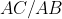
是 2，而其投影的比值是 3。但是，如果像图 13-10 那样取四 个点，并计算两个比值的比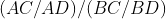
，我们就会发现这个比值在投影之下保持不变（在图 13-10 中，这个比值等于 5/4），只是当一个点被投射到无穷远时，会出现稍稍复杂但也可以处理的情况。这个“交比”是一个射影不变量。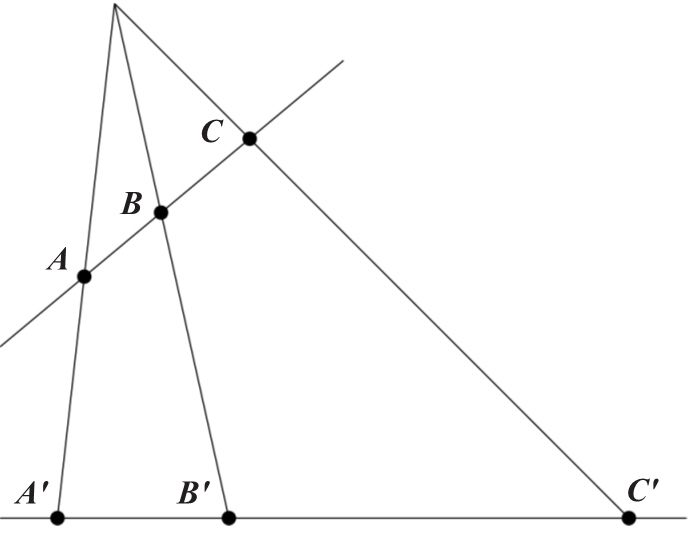
图 13-9 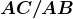
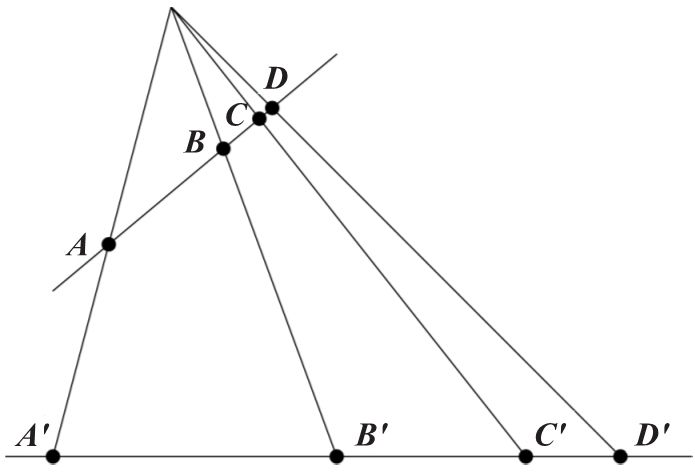
图 13-10 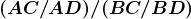
1872 年秋天，克莱因离开哥廷根大学去埃尔朗根大学担任教授。按照惯例，新教授都要发表就职演讲，也是为其教授职位做的主题报告，展示出他要致力研究的领域。10 月初，李与克莱因一起在埃尔朗根大学度过了两三周，帮助克莱因准备这份演讲稿。尽管最终克莱因没有在就职演讲上使用这份演讲稿，但他将它作为一篇论文发表了，其题目是《新几何研究的比较评述》。
这是不朽的伟大数学文献，它被誉为埃尔朗根纲领。如果从论文需要给出报告结果或解决问题的通常角度来看，它不是一篇数学论文。它保有就职演讲的某些激昂的论调，只是克莱因在他的就职仪式上没有传达这些论调。在这份纲领中，克莱因给出了我上面提到的在群论和不变量理论之下统一几何学的思想。现在看来，这份纲领是战斗的号角，号召数学家们积极行动起来去“群化”几何学。
※※※
上一节中提到的像平面上的等距变换群这类的几何变换群不仅仅是无限群，它们还是连续群 ，具有不可数无穷的性质。你可以将这个正方形移动 1 厘米，也可以移动 1 厘米的千分之一，或者 1 厘米的一万亿分之一。你可以把它旋转 90°，也可以把它旋转 90°的千分之一或 90°的一万亿分之一。你可以不受任何限制地“分割”这些等距变换。它们甚至可以“无限小”。也就是说，如果允许把这些类型的变换引入类似于群的模式之中，我们就会开启让微积分和分析学进入群论，以及让群论进入微积分和分析学的大门。
克莱因本人并没有就此止步。在埃尔朗根纲领的结尾，他倡议研究连续变换群理论，认为它与有限群论一样严格而且丰富。（他实际上说的是“置换”群。读者一定要记住，群论还远未成熟。）
尽管李在促成这份埃尔朗根纲领形成的过程中起着重要作用，但他还是认为这个想法太过于“雄心勃勃”了。1872 年末，李已经是一位全职教授，这是挪威政府专门为他设立的数学职位。因为他几乎不用承担教学任务，所以他全力投入到一个引起他注意的问题中。这是一个关于求解微分方程的问题。在微分方程中，要求的未知量不是一个数而是一个函数，例如
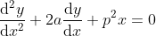
我们可以用
的三角函数和幂函数来求得
。李有处理这些方程的想法，这个想法与伽罗瓦处理通常的代数方程的方法相似，但他使用这些新的连续群取代伽罗瓦理论中的有限置换群。
在克莱因起草埃尔朗根纲领的时候，李对这方面的资料已经有了深入的理解，他认为变换群这个主题太宽泛而且太混乱，无法按克莱因的建议进行严格的分类。在此一年之后，他改变了想法。人们有可能构造出完全一般化的连续群理论，它们不局限于作用在平面之内，而且可以作用于最一般的流形之上，可以得到连续群在高等微积分中的一些结论。李着手创建这个理论，如今，这个理论就是以他的名字命名的 11 。
11
简言之，李群就是具有重要的“光滑”性质的某个一般  维流形的连续变换群。李代数是我在“数学基础知识：向量空间和代数”中定义的一种代数，它是一种具有向量乘法运算的向量空间。李代数中的向量乘法相当特殊，但事实证明，它在某些高等微积分的应用中非常有用，而且很自然地产生李群。
维流形的连续变换群。李代数是我在“数学基础知识：向量空间和代数”中定义的一种代数，它是一种具有向量乘法运算的向量空间。李代数中的向量乘法相当特殊，但事实证明，它在某些高等微积分的应用中非常有用，而且很自然地产生李群。
※※※
有了克莱因关于几何学群化的埃尔朗根纲领、李的连续群理论，以及希尔伯特在 1890 年前后在环论领域的发现，19 世纪代数和代数几何的图景几乎已经讲完。但是我还没有提及一个国家，而且在介绍代数几何时不得不提它。
这个国家就是今天的意大利，继 19 世纪中期兴盛的民族意识复兴运动之后，意大利在 19 世纪 60 年代作为国家开始形成。因此，在统一国家之后，意大利人开始恢复他们光荣的数学传统，在 19 世纪末出现了一些优秀的学者：恩里科·贝蒂（1823—1892）、弗朗切斯科·布廖斯基（1824—1897）、路易吉·克雷莫纳（1830—1903）、欧金尼奥·贝尔特拉米（1835—1900）。
黎曼对这些意大利数学家产生了深刻的影响。在 19 世纪 60 年代早期，黎曼得了肺结核，工作受到影响，他便来到气候宜人的意大利疗养。在那里，他与几位数学家结为朋友。顺理成章地，张量分析（黎曼几何的现代发展）的传人不久后就出现了，他们是两位 19 世纪末的意大利数学家格雷戈里奥·里奇（1853—1925）和图利奥·列维–奇维塔（1873—1941）。
意大利人在几何方面特别强大。他们采用中世纪研究曲线和曲面的方法来研究他们自己感兴趣的东西，即某位数学史学家所说的“现代经典几何”12 ，并把它带到了 20 世纪。这就是出生于 19 世纪六七十年代的第二批意大利数学家的工作，这些数学家包括科拉多·塞格雷（1863—1924）、圭多·卡斯泰尔诺沃（1865—1952）、费代里戈·恩里克斯（1871—1946）和弗朗切斯科·塞韦里（1879—1961）。
12 数学史学家迪尔克·斯特勒伊克（1894—2000）对柯立芝《几何方法的历史》的评述。
然而，到了这些几何学家的研究成果成熟的时候，代数几何已失去了魅力。这不仅仅是在数学潮流上的反复变化。到了 20 世纪初，逻辑和基础问题已经开始在“现代经典几何”中出现，这是庞斯列和普吕克在 19 世纪开创的几何。代数几何到了以希尔伯特和克莱因所预见的方式进行全面革新的时候。这次全面革新是第 14章的主题。我在本章只提到在代数工具已经为代数几何在 20 世纪的转变做好准备之时，意大利人在保持代数几何活力的过程中所取得的成就。
我认为，“现代经典几何”结束的标志通常是指朱利安·罗威尔·柯立芝（1873—1954）1931 年的教材《论平面代数曲线》。柯立芝 1873 年出生于美国马萨诸塞州的布鲁克莱恩 13 ，他一生中的大部分时间在哈佛大学任教，从 1927 年一直到他退休的 1940 年一直在这所高等学府的数学系担任系主任。他在其著作中写了这样的题词：
13 当被问到与上流阶层的布鲁克莱恩的柯立芝家族是否有关系时，出身较卑微的美国第 30 任总统卡尔文·柯立芝简洁地回答说：“其他人说没有。”这个回答常为人所称道。事实上，美国所有姓柯立芝的人都是沃特敦的约翰·柯立芝（1604—1691）的五个儿子的后代。这位总统是他的第二个儿子西蒙的第八代，而这位数学家是约翰·柯立芝的第五个儿子乔纳森的第七代，因此总统柯立芝和数学家柯立芝是远方表亲。朱利安·柯立芝的祖母是托马斯·杰斐逊（1743—1826，美国第三任总统）的孙女。
AI GEOMETRI ITALIANI
MORTI, VIVENTI
（献给意大利几何学家，逝去的和在世的。）